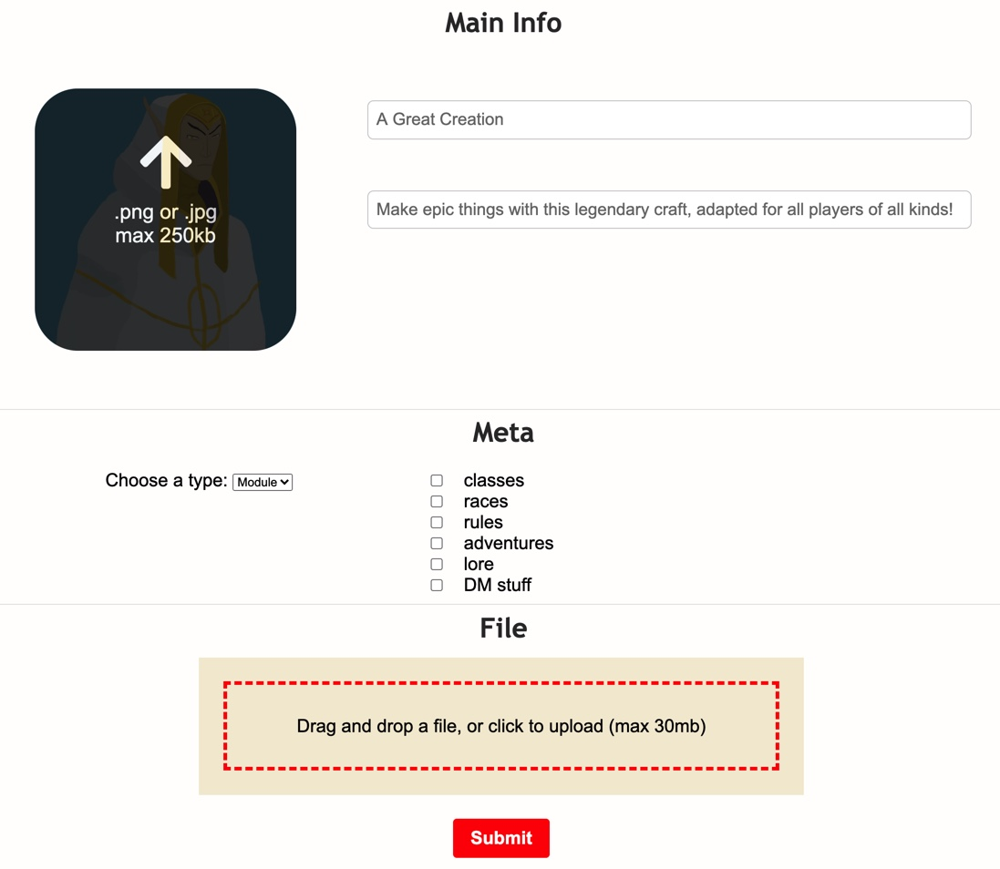
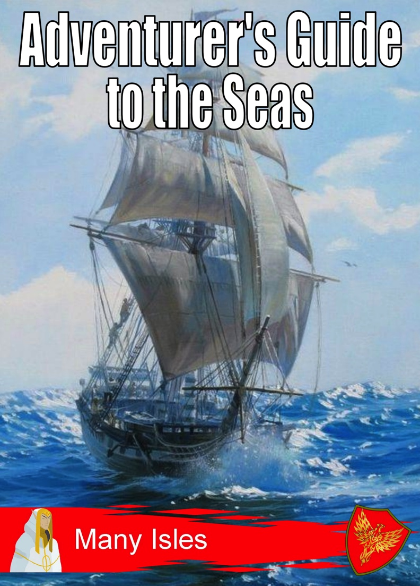

Many Isles Wiki - How To - Publishing
Publishing in the Many Isles
One of our underlying goals in the Many Isles is to create, and in light of the partnership program, we offer users the option to publish their homebrew for free.
View Partnership - Publish Product - Publication Guide

Where to Publish?
The product publishing page can be found from your partnership page on, which in turn can be accessed from your account page.
To access these pages, you need to have an account, and have closed a partnership. See the Partnership article for more information on this.
How to Publish a Product

Once you've navigated to the publishing page, you'll find an interface similar to the image on the left. It requires four pieces of input, all of which can be changed afterwards.
Image. Anything you think will look cool that you're allowed to use. Only jpg or png.
Title. A cool name. Please make sure this follows the publication guidelines.
Description. A vivid tale of the mystical secrets wrought upon the reader by your magnificent module.
Meta. Select the type of product you're publishing. Modules are PDF document resources, tools are hyperlinks to digital resources, and art are images.
File. Depending on your selected type, you'll have to upload a .pdf, paste a hyperlink, or upload an image. Since this is the real product, make sure that it, especially, follows the publication guidelines.
After you've submitted the product, you'll have to be patient for a day or two. We're still in beta, and the trade institution needs to manually pass your submission.
Publishing Guidelines
The stuff you need to pay attention to when publishing your product.
Most important of all, you should follow the few restrictions we pose on your document. For complete legislation on publishing, see the publication guide.
Title Page
Banner. Your title page needs absolutely to be adorned with the Many Isles banner, found in the Merchant's Wagon.
Title. We have a general naming style, which we'd be happy if you would follow. Also make sure it's formatted similarly to the example.
Partnership Emblem. Your partnership's symbol (in the example, that of the Pantheon) should be present in the bottom right corner.
Content
Additionally, we have some restrictions imposed in the document's content. Make sure no self-promotion is present in your product's main body. At the end of the file, you can add links to your private goods, and should add a short paragraph to credit the Many Isles. And, of course, we're glad if you reference other Many Isles goods in your work!